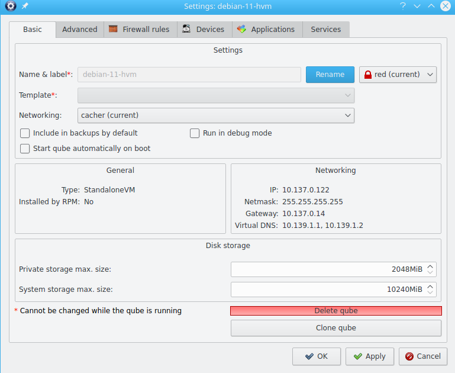
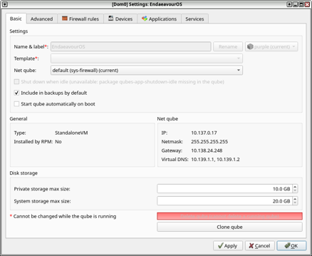
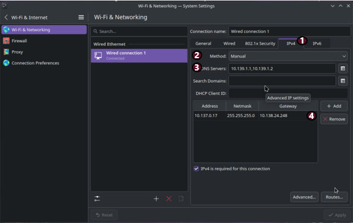
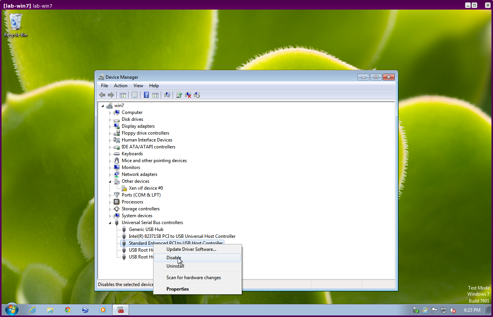

Standalones and HVMs
Warning
This page is intended for advanced users.
A standalone is a type of qube that is created by cloning a template. Unlike templates, however, standalones do not supply their root filesystems to other qubes. Examples of situations in which standalones can be useful include:
Qubes used for development (dev environments often require a lot of specific packages and tools)
Qubes used for installing untrusted packages. Normally, you install digitally signed software from Red Hat/Fedora repositories, and it’s reasonable that such software has non malicious installation scripts (rpm pre/post scripts). However, when you would like to install some packages from less trusted sources, or unsigned, then using a dedicated (untrusted) standalone might be a better way.
Meanwhile, a Hardware-assisted Virtual Machine (HVM), also known as a “Fully-Virtualized Virtual Machine,” utilizes the virtualization extensions of the host CPU. These are typically contrasted with Paravirtualized (PV) VMs.
HVMs allow you to create qubes based on any OS for which you have an installation ISO, so you can easily have qubes running Windows, *BSD, or any Linux distribution. You can also use HVMs to run “live” distros.
By default, every qube runs in PVH mode (which has security advantages over both PV and HVM), except for those with attached PCI devices, which run in HVM mode. See here for a discussion of the switch from PV to HVM and here for the announcement about the change to using PVH as default.
The standalone/template distinction and the HVM/PV/PVH distinctions are orthogonal. The former is about root filesystem inheritance, whereas the latter is about the virtualization mode. In practice, however, it is most common for standalones to be HVMs and for HVMs to be standalones. Hence, this page covers both topics.
Understanding Virtualization Modes
PVH has both better performance and better security than either PV or HVM:
PVH has less attack surface than PV, as it relies on Second Level Address Translation (SLAT) hardware. Guests modify their own page tables natively, without hypervisor involvement. Xen does not need to perform complex checks to ensure that a guest cannot obtain write access to its own page tables, as is necessary for PV. Flaws in these checks have been a source of no fewer than four guest ⇒ host escapes: XSA-148, XSA-182, XSA-212, and XSA-213.
PVH also has less attack surface than HVM, as it does not require QEMU to provide device emulation services. While QEMU is confined in a stubdomain, and again in a seccomp based sandbox, the stubdomain has significant attack surface against the hypervisor. Not only does it have the full attack surface of a PV domain, it also has access to additional hypercalls that allow it to control the guest it is providing emulation services for. XSA-109 was a vulnerability in one of these hypercalls.
PVH has better performance than HVM, as the stubdomain in HVM consumes resources (both memory and a small amount of CPU). There is little difference in the I/O path at runtime, as both PVH and HVM guests usually use paravirtualized I/O protocols.
Surprisingly, PVH often has better performance than PV. This is because PVH does not require hypercalls for page table updates, which are expensive. SLAT does raise the cost of TLB misses, but this is somewhat mitigated by a second-level TLB in recent hardware.
Creating a standalone
You can create a standalone in the Qube Manager by selecting the “Type” of “Standalone qube copied from a template” or “Empty standalone qube (install your own OS).”
Alternatively, to create an empty standalone from the dom0 command line:
$ qvm-create --class StandaloneVM --label <YOUR_COLOR> --property virt_mode=hvm <NEW_STANDALONE_NAME>
Or to create a standalone copied from a template:
$ qvm-create --class StandaloneVM --label <YOUR_COLOR> --property virt_mode=hvm --template <TEMPLATE_QUBE_NAME> <NEW_STANDALONE_NAME>
Notes:
Technically,
virt_mode=hvmis not necessary for every standalone. However, it is needed if you want to use a kernel from within the qube.If you want to make software installed in a template available in your standalone, pass in the name of the template using the
--templateoption.
Updating standalones
When you create a standalone from a template, the standalone is a complete clone of the template, including the entire filesystem. After the moment of creation, the standalone becomes completely independent from the template. Therefore, the standalone will not be updated merely by updating the template from which it was originally cloned. Rather, it must be updated as an independent qube. See How to Update.
Creating an HVM
Using the GUI
In Qube Manager, use either the “New qube” button, or the “New qube” entry in the “Qube” menu. In the “Create new qube” dialog box click on tab “Standalone”. If “install system from device” is selected (which it is by default), then virt_mode will be set to hvm automatically. Otherwise, open the newly-created qube’s Settings GUI and, in the “Advanced” tab, select HVM in the virtualization mode drop-down list. Also, make sure “Kernel” is set to (none) on the same tab.
Command line
Qubes are template-based (i.e., app qubes by default, so you must set the --class StandaloneVM option to create a standalone. The name and label color used below are for illustration purposes.
$ qvm-create my-new-vm --class StandaloneVM --property virt_mode=hvm --property kernel='' --label=green
If you receive an error like this one, then you must first enable VT-x in your BIOS:
libvirt.libvirtError: invalid argument: could not find capabilities for arch=x86_64
Make sure that you give the new qube adequate memory to install and run.
Installing an OS in an HVM
You will have to boot the qube with the installation media “attached” to it. You may either use the GUI or use command line instructions. At the command line you can do this in three ways:
If you have the physical CD-ROM media and an optical disc drive:
$ qvm-start <YOUR_HVM> --cdrom=/dev/cdrom
If you have an ISO image of the installation media located in dom0:
$ qvm-start <YOUR_HVM> --cdrom=dom0:/usr/local/iso/<YOUR_INSTALLER.ISO>
If you have an ISO image of the installation media located in a qube (the qube where the media is located must be running):
$ qvm-start <YOUR_HVM> --cdrom=<YOUR_OTHER_QUBE>:/home/user/<YOUR_INSTALLER.ISO>
For security reasons, you should never copy untrusted data to dom0.
Next, the qube will start booting from the attached installation media, and you can start installation. Whenever the installer wants to “reboot the system” it actually shuts down the qube, and Qubes won’t automatically start it. You may have to restart the qube several times in order to complete installation (as is the case with Windows 7 installations). Several invocations of the qvm-start command (as shown above) might be needed.
Setting up networking for HVMs
Just like standard app qubes, an HVM gets a fixed IP addresses centrally assigned by Qubes. Normally, Qubes agent scripts (or services on Windows) running within each app qube are responsible for setting up networking within the qube according to the configuration created by Qubes (through keys exposed by dom0 to the qube). Such centrally-managed networking infrastructure allows for advanced networking configurations.
A generic HVM such as a standard Windows or Ubuntu installation, however, has no Qubes agent scripts running inside it initially and thus requires manual configuration of networking so that it matches the values assigned by Qubes.
Even though we do have a small DHCP server that runs inside the HVM’s untrusted stub domain to make the manual network configuration unnecessary for many qubes, this won’t work for most modern Linux distributions, which contain Xen networking PV drivers (but not Qubes tools), which bypass the stub-domain networking. (Their net frontends connect directly to the net backend in the net qube.) In this instance, our DHCP server is not useful.
In order to manually configure networking in a qube, one should first find out the IP/netmask/gateway assigned to the particular qube by Qubes. This can be seen, e.g., in the Qube Manager in the qube’s properties:

Alternatively, one can use the qvm-ls -n command to obtain the same information (IP/netmask/gateway). The Qube Settimgs shows a netmask of 255.255.255.255. This is not suitable for most standalones, and you will need to use a different value.
In Qubes, the IP address is usually in range 10.137.0.0/16, with disposables in range 10.138.0.0/16, and DNS set to 10.139.1.1 and 10.139.1.2. The simplest solution is to set the netmask to 255.0.0.0 - standard for a class A network. If you want a more restricted solution you could use 255.252.0.0, or 255.255.255.0
There is opt-in support for IPv6 forwarding.
An example of setting up a network - Network Manager on KDE
Every guest operating system has its own way of handling networking, and the user is referred to the documentation that comes with that operating system. However, Network Manager is widely used on Linux systems, and so a worked example will prove useful. This example is for an HVM running EndeavourOS.

In this example, Network Manager on KDE, the network had the following values:
IPv4 networking
IP address 10.137.0.17
Netmask - qube settings showed 255.255.255.255, but we decided to use 255.255.255.0
Gateway 10.138.24.248
Virtual DNS 10.139.1.1 and 10.139.1.2

The network was set up by entering Network Manager, selecting the Wi-Fi & Networking tab, clicking on the Wired Ethernet item, and selecting tab IPv4 (1). The Manual method was selected (2), which revealed areas for data entry. The DNS Servers section takes a comma-separated list, here 10.139.1.1,10.1.139.2 (3). At the bottom of the tab (4), the ‘+ Add’ button was selected, and the IP address of 10.137.0.17 entered in the ‘Address’ column, the Netmask of 255.255.255.0 entered in the ‘Netmask’ column, and the Gateway of 10.138.24.248 under ‘Gateway’. Selecting the “Apply” button stored these changes
Using template-based HVMs
Qubes allows HVMs to share a common root filesystem from a select template. This mode can be used for any HVM (e.g., FreeBSD running in an HVM).
In order to create an HVM template, you use the following command, suitably adapted:
$ qvm-create --class TemplateVM <YOUR_HVM_TEMPLATE_NAME> --property virt_mode=HVM --property kernel='' -l <YOUR_COLOR>
Set memory as appropriate and install the OS into this template in the same way you would install it into a normal HVM. Generally, you should install in to the first “system” disk. (Resize it as needed before starting installation.)
You can then create a new qube using the new template. If you use this Template as is, then any HVMs based on it will effectively be disposables. All file system changes will be wiped when the HVM is shut down.
Windows as a template gives specific advice on installing and using Windows-based templates.
Cloning HVMs
Just like normal app qubes, HVMs can also be cloned either using the command qvm-clone or via the Qube Manager’s “Clone VM” option in the right-click menu.
The cloned qube will get identical root and private images and will essentially be identical to the original qube, except that it will get a different MAC address for the networking interface:
[joanna@dom0 ~]$ qvm-prefs my-new-vm
autostart D False
backup_timestamp U
debug D False
default_dispvm D None
default_user D user
gateway D
gateway6 D
include_in_backups - False
installed_by_rpm D False
ip D 10.137.0.122
ip6 D fd09:24ef:4179::a89:7a
kernel -
kernelopts D nopat
klass D StandaloneVM
label - red
mac D 00:16:3e:5e:6c:00
management_dispvm D default-mgmt-dvm
maxmem D 0
memory - 1000
name - my-new-vm
netvm - sys-firewall
provides_network - False
qid - 122
qrexec_timeout D 60
shutdown_timeout D 60
start_time D
stubdom_mem U
stubdom_xid D -1
updateable D True
uuid - 54387f94-8617-46b0-8806-0c18bc387f34
vcpus D 2
virt_mode - hvm
visible_gateway D 10.137.0.14
visible_gateway6 D fd09:24ef:4179::a89:e
visible_ip D 10.137.0.122
visible_ip6 D fd09:24ef:4179::a89:7a
visible_netmask D 255.255.255.255
xid D -1
[joanna@dom0 ~]$ qvm-clone my-new-vm my-new-vm-copy
/.../
[joanna@dom0 ~]$ qvm-prefs my-new-vm-copy
autostart D False
backup_timestamp U
debug D False
default_dispvm D None
default_user D user
gateway D
gateway6 D
include_in_backups - False
installed_by_rpm D False
ip D 10.137.0.137
ip6 D fd09:24ef:4179::a89:89
kernel -
kernelopts D nopat
klass D StandaloneVM
label - red
mac D 00:16:3e:5e:6c:00
management_dispvm D default-mgmt-dvm
maxmem D 0
memory - 1000
name - my-new-vm-copy
netvm - sys-firewall
provides_network - False
qid - 137
qrexec_timeout D 60
shutdown_timeout D 60
start_time D
stubdom_mem U
stubdom_xid D -1
updateable D True
uuid - 9ad109a9-d95a-4e03-b977-592f8424f42b
vcpus D 2
virt_mode - hvm
visible_gateway D 10.137.0.14
visible_gateway6 D fd09:24ef:4179::a89:e
visible_ip D 10.137.0.137
visible_ip6 D fd09:24ef:4179::a89:89
visible_netmask D 255.255.255.255
xid D -1
Note that the MAC addresses differ between those two otherwise identical qubes. The IP addresses assigned by Qubes will also be different, of course, to allow networking to function properly:
[joanna@dom0 ~]$ qvm-ls -n
NAME STATE NETVM IP IPBACK GATEWAY
my-new-hvm Halted sys-firewall 10.137.0.122 - 10.137.0.14
my-new-hvm-clone Halted sys-firewall 10.137.0.137 - 10.137.0.14
If, for any reason, you would like to make sure that the two qubes have the same MAC address, you can use qvm-prefs to set a fixed MAC address:
[joanna@dom0 ~]$ qvm-prefs my-new-vm-copy -s mac 00:16:3E:5E:6C:05
[joanna@dom0 ~]$ qvm-prefs my-new-vm-copy
name : my-new-vm-copy
label : green
type : HVM
netvm : firewallvm
updateable? : True
installed by RPM? : False
include in backups: False
dir : /var/lib/qubes/appvms/my-new-vm-copy
config : /var/lib/qubes/appvms/my-new-vm-copy/my-new-vm-copy.conf
pcidevs : []
root img : /var/lib/qubes/appvms/my-new-vm-copy/root.img
private img : /var/lib/qubes/appvms/my-new-vm-copy/private.img
vcpus : 4
memory : 512
maxmem : 512
MAC : 00:16:3E:5E:6C:05
debug : off
default user : user
qrexec_installed : False
qrexec timeout : 60
drive : None
timezone : localtime
Assigning PCI devices to HVMs
HVMs (including Windows qubes) can be assigned PCI devices just like normal app qubes. For example, you can assign a USB controller to a Windows qube, and you should be able to use various devices that require Windows software, such as phones, electronic devices that are configured via FTDI, etc.
One problem at the moment, however, is that after the whole system gets suspended into S3 sleep and subsequently resumed, some attached devices may stop working and should be restarted within the qube. This can be achieved under a Windows HVM by opening the Device Manager, selecting the actual device (such as a USB controller), ‘Disabling’ the device, and then ‘Enabling’ the device again. This is illustrated in the screenshot below:

Converting VirtualBox VMs to Qubes HVMs
You can convert any VirtualBox VM to a Qubes HVM using this method.
For example, Microsoft provides virtual machines containing an evaluation version of Windows.
About 60 GB of disk space is required for conversion. Use an external hard drive if needed. The final root.img size is 40 GB.
In a Debian app qube, install qemu-utils and unzip:
$ sudo apt install qemu-utils unzip
In a Fedora app qube:
$ sudo dnf install qemu-img
Unzip VirtualBox zip file:
$ unzip *.zip
Extract OVA tar archive:
$ tar -xvf *.ova
Convert vmdk to raw:
$ qemu-img convert -O raw *.vmdk win10.raw
Copy the root image file from the originating qube (here called untrusted) to a temporary location in dom0, typing this in a dom0 terminal:
$ qvm-run --pass-io untrusted 'cat "/media/user/externalhd/win10.raw"' > /home/user/win10-root.img
From within dom0, create a new HVM (here called win10) with the root image we just copied to dom0 (change the amount of RAM in GB as you wish):
$ qvm-create --property=virt_mode=hvm --property=memory=4096 --property=kernel='' --label red --standalone --root-move-from /home/user/win10-root.img win10
Start win10:
$ qvm-start win10
Optional ways to get more information
Filetype of OVA file:
$ file *.ova
List files of OVA tar archive:
$ tar -tf *.ova
List filetypes supported by qemu-img:
$ qemu-img -h | tail -n1
Further reading
Other documents related to HVMs: